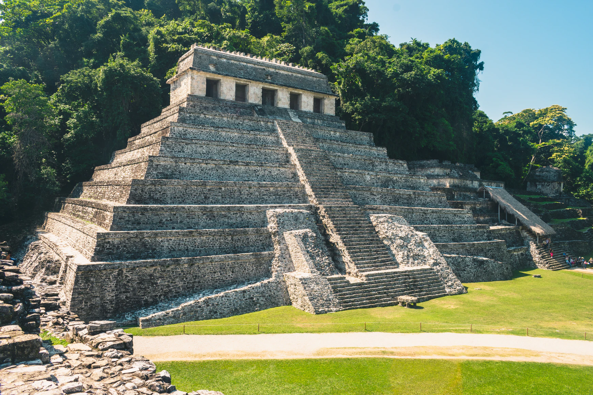
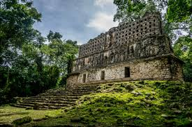
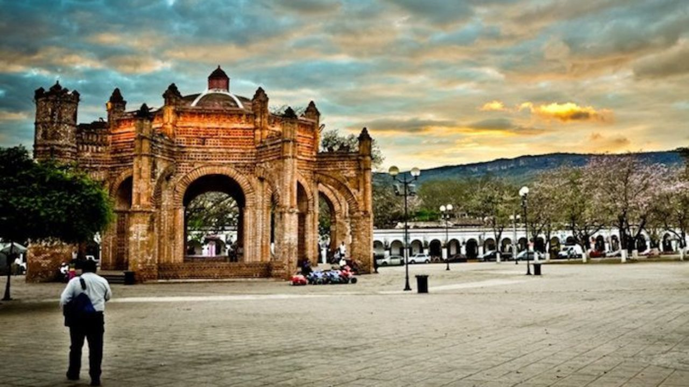
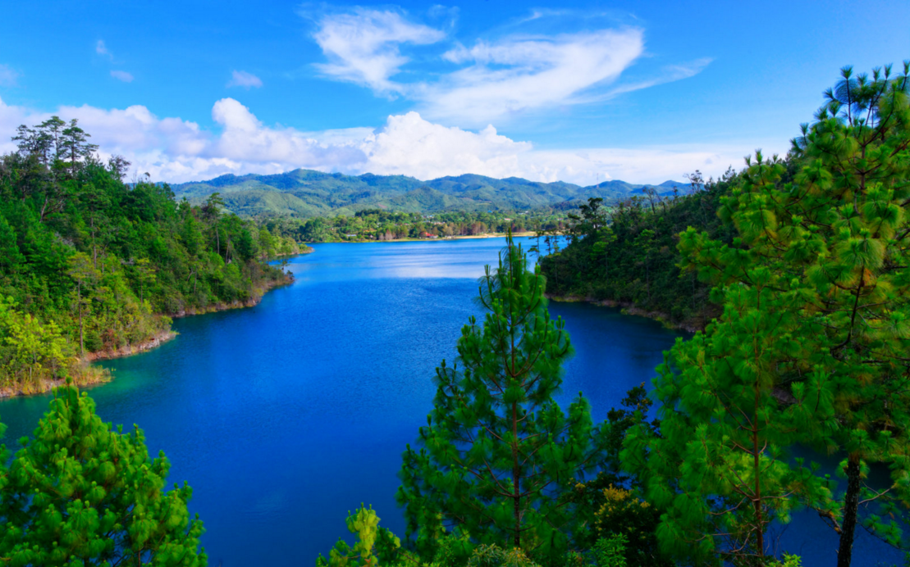
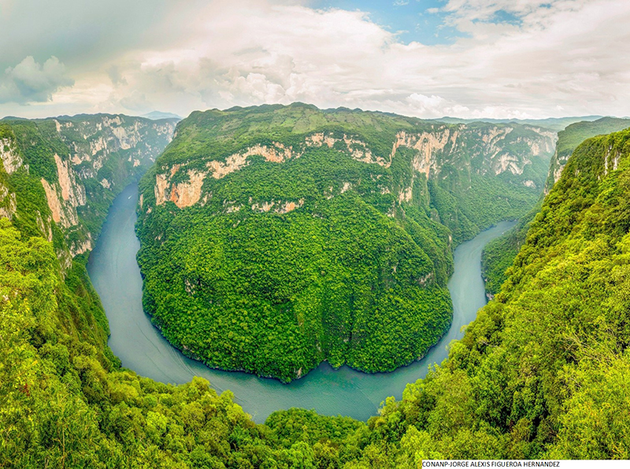

Arqueologico
Palenque
Palenque es el yacimiento arqueológico maya de mayor importancia en el país y en toda Centroamérica. Este sitio cuenta con construcciones en la típica arquitectura cuadrangular y piramidal maya, las cuales están muy bien conservadas, tales como: El Templo de las Inscripciones, El Observatorio, El Templo del Sol y El Templo del Conde, sin duda alguna otro de los lugares turísticos de Chiapas a visitar. Zona arqueológica ubicada al noreste del Estado Mexicano de Chiapas, a 282 km de Tuxtla Gutiérrez y a 220 km de San Cristóbal de las Casas cerca del río Usumacinta, Ir a Wikipedia
Mira el mapa: Ir al mapa
1Habitantes
La población total de Palenque en 2020 fue 132,265 habitantes, siendo 50.8% mujeres y 49.2% hombres. ¿EN QUÉ PUEDO LLEGAR? Hay 5 maneras de llegar desde Tuxtla Gutiérrez hasta Palenque (zona arqueológica) en autobús, taxi, coche o en autobús de enlace. Autobús •Coge el autobús desde Tuxtla Gutiérrez hasta Palenque 6h $370-$600 Autobús vía San Cristóbal de las Casas •Coge el autobús desde Tuxtla Gutiérrez hasta San Cristóbal de las Casas Coge el autobús desde San Cristóbal de las Casas hasta Palenque 7h 45m Taxi • Coge un taxi desde Tuxtla Gutiérrez a Palenque (zona arqueológica) 4h 5m $2800-$3400 En coche •Conduce desde Tuxtla Gutiérrez a Palenque (zona arqueológica) 4h 5m $450-$700 Autobús de enlace • Toma un autobús de enlace desde Tuxtla Gutiérrez a Palenque 10h $700-$1000
2¿Cómo llegar?
La manera más rápida de llegar La opción más barata Distancia entre Tuxtla Gutiérrez a Palenque (zona arqueológica) en autobuses El tiempo de viaje en autobús entre Tuxtla Gutiérrez y Palenque (zona arqueológica) es alrededor de 6h y cubre una distancia aproximada de 270 km. Operado por Autobuses Aexa y Ómnibus Cristóbal Colón (OCC), el servicio de autobús de Tuxtla Gutiérrez a Palenque (zona arqueológica) parte de Tuxtla Gutiérrez y llega a Palenque. Por lo general 21 autobuses funciona semanalmente, aunque los horarios de los fines de semana y los días festivos pueden variar, por lo que hay que comprobarlo con antelación.
3Algo de Hisotria
Palenque fue fundado por fray Pedro Lorenzo, a cierta distancia de las ruinas del mismo nombre en 1567. El padre dominico integró el pueblo con muchas familias choles dispersas en la Selva Lacandona. Se sabe que los nativos llamaban a Palenque, Otulún palabra de origen chol que significa “sitio cercado”
4Algo de Hisotria
Se ubica a 2 hrs. de Villahermosa, a 4:30 hrs.de Campeche; y a 6 hrs. de Tuxtla Gutiérrez. El nuevo Aeropuerto Internacional de Palenque se encuentra a sólo 10 minutos de la ciudad de Palenque. Limita al norte con Tabasco y los municipios de Catazajá y La Libertad; al este con La Libertad, el estado de Tabasco y la República de Guatemala; al sur con Ocosingo, Chilón y Salto de agua; y al oeste con Salto de Agua y el estado de Tabasco.
Bonampak
El Bonampak es uno de los principales tesoros del muralismo prehispánico, son reconocidos por el notable realismo de las actividades normales de la vida indígena como la ejecución músical, el trabajo, los oficios religiosos, los bailes, incluso los sacrificios humanos. El sitio yace cerca de un afluente del Río Usumacinta y está a unos 21 kilómetros al sur de Yaxchilán, Ir a Wikipedia
Mira el mapa: Ir al mapa
1Habitantes
Hay 11 avitantes
2Historia
Bonampak es un sitio notable por sus extraordinarias pinturas murales. El asentamiento, que tuvo su apogeo en el clásico tardío, entre 600 a 800 d.C., es de proporciones modestas comparado con grandes centros mayas como Palenque y Yaxchilan. De hecho, se supone que Bonampak fue, política y culturalmente, un lugar dependiente de Yaxchilán, cuyo glifo emblema se encuentra representado varias veces en los monumentos de este sitio. El centro monumental está formado, al menos, por tres conjuntos de arquitectura mayor; en ellos se desarrollaba la vida pública del lugar y residía la clase dirigente. En la Gran Plaza y la escalera que conduce a la Acrópolis, se encuentran varias estelas con fechas de Cuenta Larga entre 782 y 791 d.C., en las que se representan personajes con elaborados atavíos, tal vez los gobernantes del lugar. Entre las estructuras de la Acrópolis, construida sobre una baja colina, se encuentra el Edificio 1, famoso por sus tres cuartos con aproximadamente 112 m. de pintura mural, las mejores conservadas e importantes que se conozcan del clásico maya. Esos murales han sido interpretados de diversas maneras: para algunos, las distintas escenas narran una sola historia, que incluye una batalla, sus secuelas y la celebración por la victoria. En el cuarto central se representa una batalla entre guerreros mayas, algunos ricamente ataviados; los cuatro protagonistas principales amagan con lanzas y toman por cabeza a un individuo, en tanto que algunos músicos tocan sus trompetas de guerra. La escena cambia a una plataformas escandalosa, donde los prisioneros han sido desnudados y arrancadas las uñas de sus manos; entre los vencedores, vestidos ricamente y con complejos tocados en forma de animal, destaca un guerrero con una lanza, a cuyos pies se encuentra un cautivo suplicante. En el Cuarto 3 se representa lo que ha sido considerado la celebración de la victoria; muestra a los señores de Bonampak ricamente ataviados y con grandes tocados de pluma de quetzal, acompañados, entre otros personajes, por una banda de músicos tocando trompetas, tambores, sonajas y conchas de tortuga. Bonampak que significa "Muros pintados" conocido antiguamente como Ak'e y en sus inmediaciones como Usiij Witz, "Cerro del Zopilote", es un sitio arqueológico de la cultura maya en el estado de Chiapas, México.
Mira el mapa: Ir al mapa
3Cultura
Maya
4Continente
America
5Descubrimiento
Pepe Chambor y Acasio Chan
6Como y en que llegar
Autobús, taxi
•Coge el autobús desde Tuxtla Gutiérrez hasta Villahermosa Coge el autobús desde Villahermosa hasta Tenosique de Pino Suárez Coge un taxi desde Tenosique de Pino Suárez a Bonampak
10h 23m
$1581-$2375
Autobús, taxi vía Tuxtla Gutiérrez
•Coge el autobús desde Tuxtla Gutiérrez hasta Villahermosa Coge el autobús desde Villahermosa hasta Tenosique de Pino Suárez Coge un taxi desde Tenosique de Pino Suárez a Bonampak
11h 6m
$1575-$2380
En coche
• Conduce desde Tuxtla Gutiérrez a Bonampak
5h 42m
$650-$1000
COMO LOCALIZAR:
Coordenadas: 16°42´14″N 91°03′54″O/16.704, -91.065
Localidad:
Ocosingo
País: México
La localidad de Zona Arqueológica Bonampak está situada en el Municipio de Ocosingo (en el Estado de Chiapas). En la lista de los pueblos más poblados de todo el municipio, es el número 758 del ránking. Zona Arqueológica Bonampak está a 295 metros de altitud.
En el año 2020, las autoridades lo declaran deshabitado.
Pueblos Magicos
San Cristobal

Es conocida por su conservada arquitectura colonial, tal como la Catedral de San Cristóbal de color amarillo con muchos siglos de antigüedad en el Parque Central. El Museo de los Altos tiene exhibiciones de tejidos e historia regional. Justo fuera de este Museo conseguirás un mercado donde están todos los coloridos tejidos y artesanía. Si te gusta la Arquitectura Regional esta casa es una parada obligatoria, que se destaca en los lugares turisticos de chiapas. El municipio de San Cristóbal de Las Casas colinda con: • Al norte: Chamula y Zinacantán. • Al este: Huixtán. • Al sur: Teopisca, Totolapa, San Lucas y Amatenango del Valle • Al oeste: Tuxtla Gutiérrez y Chiapa de Corzo, Ir a Wikipedia
Mira el mapa: Ir al mapa
1Habitantes:
La población total de San Cristóbal de las Casas en 2020 fue 215,874 habitantes, siendo 52.6% mujeres y 47.4% hombres.
2Presupuesto
Esta ruta es ofrecida por 4 líneas de autobuses con un rango de precio de boletos entre $ 156.00 y $ 1,412.00.
3Como localizar
San Cristóbal de las Casas es una ciudad en la zona alta del estado de Chiapas al sur de México. Es conocida por su arquitectura colonial bien conservada, como la Catedral de San Cristóbal de color amarillo y con siglos de antigüedad ubicada en el Parque Central.
4Historia:
La ciudad fue fundada por el conquistador español Diego de Mazariegos y un conjunto de colonos de diversos orígenes (españoles, mexicas, tlaxcaltecas y mayas) en 1528 con el nombre de Ciudad Real de los españoles, en tierras que obtuvieron tras derrotar victoriosamente a los tsotsiles.
Chiapas de Corzo
A unos 15 kilómetros de Tuxtla Gutiérrez se encuentra la que llegó a ser la primera capital del estado de Chiapas. Es un lugar que resalta por su riqueza cultural y folclórica, la cual es atestiguada por sus barrios antiguos y tradicionales, la artesanía, el bordado, el tallado de madera, la joyería y lo que no podía faltar la comida y las fiestas, Saber más...
En 2020, la población en Chiapa de Corzo fue de 112,075 habitantes (49.2% hombres y 50.8% mujeres).
Mira el mapa: Ir al mapa
1Presupuesto:
Boleto de Avión (Llegada a Villahermosa, regreso por Tuxtla) $3,105.19 MXN ($155 USD) Hospedaje para 5 días en Chiapas (Palenque y San Cristobal) $3,218.04 MXN ($160 USD) Lugares Turísticos en Chiapas (Revisar detalle) $805 MXN ($41 USD) Tours y taxis para ir a cada pueblo y lugar turístico $3,915 MXN ($196 USD) Comida y bebida (cinco días) $2,660 MXN ($133 USD) Gastos Adicionales (Extorsión, Souvenirs, etc.) $1,300 MXN
2Como localizar:
Chiapa de Corzo, localizada en el estado de Chiapas, en la República Mexicana, es una hermosa ciudad fundada el 01 de marzo de 1528 por lo que es considerada una de las ciudades más antiguas del continente americano.
3Historia:
La actual ciudad de Chiapa de Corzo, fue fundada el 1° de marzo de 1528 por el capitán Diego de Mazariegos con el nombre de Villa Real de Chiapa. La fundación del poblado se hizo alrededor de la frondosa ceiba (La Pochota) que se encuentra sobre la margen derecha del río Grande de Chiapa.
Natural
Lagunas de montebello
Las lagunas de Montebello es un parque nacional con más de 6.000 hectáreas, como principal atractivo tiene sus lagunas, donde resaltan los colores verdes y azul turquesa en su naturaleza. Está ubicado en frontera con Guatemala, el nombre de este parque se debe a la belleza de su flora. Es uno de los mejores lugares de atracciones turísticas en Chiapas que debes visitar, puedes realizar actividades como pasear en balsas, en kayaks, disfrutar de las vistas espectaculares, quizás puedas ver un Quetzal, ave de precioso plumaje, Saber mas...
El Parque Nacional Lagunas de Montebello, ubicado en Chiapas, es uno de los sitios naturales más bonitos de México.
Mira el mapa: Ir al mapa
1Historia
Este territorio de 6022 hectáreas fue el primero en ser designado parque nacional en Chiapas. También fue designado sitio Ramsar en 2003 y Reserva de la Biosfera por la UNESCO en 2009.
Oficialmente contiene 59 lagos y lo cierto es que ofrecen un magnífico espectáculo con aguas de diferentes tonalidades de azul, todo ello con un telón de fondo de verdes montañas llenas de pinos.
2Presupuesto
Para visitar las Lagunas necesitaras un presupuesto alto, ya que quedarse ahí 1 semana te costara 8,000 pesos mexicanos (400 dólares), esto sin considerar la comida, ya que si agregamos la comida terminarías gastando 12,000 pesos mexicanos aproximadamente (600 dólares) y esto teniendo en cuenta que entraras 1 vez cada día de la semana esto incluye hospedaje, tours y comida.
La mejor manera de ir desde Tuxtla Gutiérrez a Lagunas de Montebello sin un coche es en autobús y taxi que dura 3h 33m y cuesta $650 - $950 y si tienes coche puede durar 2hrs 53min y costar de 339 pesos a 489 pesos mexicanos.
3COMO LOCALIZAR:
Se localiza en los municipios de La Independencia y La Trinitaria, en el Estado de Chiapas. Categoría: Parque Nacional. Dirección Regional: Frontera Sur, Istmo y Pacífico Sur.
Cañon del Sumidero
Si eres un amante de la observación natural debes visitar el Cañón de Sumidero con categoría de parque nacional para disfrutar de la flora y la fauna. Aunque ya no es probable ver jaguares, sí conseguirás ver patos, garzas, águilas, pelicanos y halcones, entrando un poco a la selva, verás osos hormigueros, caimanes y monos. situado a 5km de Tuxtla Gutiérrez capital del estado de Chiapas, México; dentro del municipio de Chiapa de Corzo, Saber mas...
Mira el mapa: Ir al mapa
1Caracteristicas:
Este cañón tiene un acantilado cuya altura va un poco más allá de los 1,000m s. n. m. y se levanta sobre el cauce del río Grijalva, que tiene una profundidad de más de 250 m . La falla geológica se abrió hace aproximadamente doce millones de años en la Sierra Norte de Chiapas. Tiene muros que se elevan a más de 1,300 m desde la profundidad de la garganta, donde corren las aguas del río Grijalva que atraviesa los estados de Chiapas y Tabasco y desemboca en el golfo de México. En su boca sur, el cañón inicia en Chiapa de Corzo, y desemboca en el embalse artificial de la presa hidroeléctrica Manuel Moreno Torres, conocida popularmente como Presa Chicoasén.
2Historia:
Por su gran riqueza ecológica, el 8 de diciembre de 1980 se declaró como parque nacional Cañón del Sumidero con una extensión de 21,789 ha. El 22 de febrero de 2004, el área del parque también fue declarada como sitio Ramsar en México.
La relevancia del Cañón del Sumidero es tal que forma parte del escudo de Chiapas.
La localidad de Cañón del Sumidero tiene 35 habitantes.
3Presupuesto::
Los recorridos por el Cañón del Sumidero varían entre $200 y $400. Al adquirir alguno de estos tours también tendrás acceso a los miradores del parque que individualmente tienen un costo de $30 aproximadamente.
Llegar al Cañón del Sumidero en tu propio coche tardaras 10 min aproximadamente y gastaras 19 pesos a 30 pesos mexicanos, si te vas en un taxi tardarías lo mismo, pero pagarías 120 pesos a 150 pesos mexicanos, manejando en la calzada al. Sumidero (6.4 km).